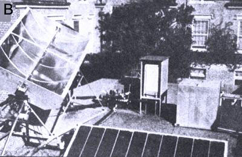

Dr. E.A. Farber
[b] A refrigerator-center of photo-is driven indirectly by the sun's energy as Ole Sol heats oil to a high temperature. The hot liquid is then circulated around the generator of the cooling unit's ammonia-absorption system.